graph TD
shadow_tower_part1a[Shadow Tower Part1 A] -- Tower Top 1 -8 --> shadow_tower_part2b[Shadow Tower Part2 B]
shadow_tower_part2b[Shadow Tower Part2 B] -- Upper 3 -8 --> shadow_tower_part1a[Shadow Tower Part1 A]
shadow_tower_part2b[Shadow Tower Part2 B] -- Middle 2 0 --> earth_world_false_pit_cavern[Earth World
False Pit Cavern]
shadow_tower_part2b[Shadow Tower Part2 B] -- Edge 0 0 --> death_world_lingering_curse_layer[Death World
Lingering Curse Layer]
earth_world_false_pit_cavern[Earth World
False Pit Cavern] -- Entrance 3 -8 --> death_world_undead_layer[Death World
Undead Layer]
earth_world_false_pit_cavern[Earth World
False Pit Cavern] -- Bridge 2 -8 --> shadow_tower_part3a[Shadow Tower Part3 A]
earth_world_false_pit_cavern[Earth World
False Pit Cavern] -- Exit 2 -8 --> shadow_tower_part2b[Shadow Tower Part2 B]
earth_world_false_pit_cavern[Earth World
False Pit Cavern] -- Jump in 0 3 --> water_world_white_rain_area[Water World
White Rain Area]
earth_world_false_pit_cavern[Earth World
False Pit Cavern] -- Totem 2 3 --> illusion_world_gloomy_domain[Illusion World
Gloomy Domain]
death_world_lingering_curse_layer[Death World
Lingering Curse Layer] -- Door 0 -8 --> shadow_tower_part2b[Shadow Tower Part2 B]
death_world_lingering_curse_layer[Death World
Lingering Curse Layer] -- Box room 3 2 --> death_world_dark_castle_layer[Death World
Dark Castle Layer]
shadow_tower_part3a[Shadow Tower Part3 A] -- Top right 3 0 --> human_world_solitary_region[Human World
Solitary Region]
shadow_tower_part3a[Shadow Tower Part3 A] -- Top left 2 0 --> earth_world_false_pit_cavern[Earth World
False Pit Cavern]
shadow_tower_part3a[Shadow Tower Part3 A] -- Bottom 1 -8 --> water_world_impure_pool_area[Water World
Impure Pool Area]
shadow_tower_part3a[Shadow Tower Part3 A] -- Jump --> shadow_tower_part3b[Shadow Tower Part3 B]
illusion_world_gloomy_domain[Illusion World
Gloomy Domain] -- Ladder down 1 -8 --> shadow_tower_part3b[Shadow Tower Part3 B]
illusion_world_gloomy_domain[Illusion World
Gloomy Domain] -- Entrance 2 0 --> fire_world_phoenix_cave[Fire World
Phoenix Cave]
illusion_world_gloomy_domain[Illusion World
Gloomy Domain] -- Totem 2 3 --> earth_world_false_pit_cavern[Earth World
False Pit Cavern]
death_world_dark_castle_layer[Death World
Dark Castle Layer] -- Prison 0 0 --> earth_world_poisonous_cavern[Earth World
Poisonous Cavern]
death_world_dark_castle_layer[Death World
Dark Castle Layer] -- Entrance 3 0 --> monster_world_false_eye_area[Monster World
False Eye Area]
death_world_dark_castle_layer[Death World
Dark Castle Layer] -- Lower totem 3 3 --> human_world_forgotten_region[Human World
Forgotten Region]
death_world_dark_castle_layer[Death World
Dark Castle Layer] -- Upper totem 1 1 3 --> death_world_lingering_curse_layer[Death World
Lingering Curse Layer]
death_world_dark_castle_layer[Death World
Dark Castle Layer] -- Upper totem 2 1 0 --> death_world_gate_of_the_dead[Death World
Gate Of The Dead]
death_world_undead_layer[Death World
Undead Layer] -- King's room 1 0 --> earth_world_false_pit_cavern[Earth World
False Pit Cavern]
death_world_undead_layer[Death World
Undead Layer] -- Entrance 1 0 --> earth_world_rotting_cavern[Earth World
Rotting Cavern]
shadow_tower_part3b[Shadow Tower Part3 B] -- Bottom middle 3 0 --> water_world_impure_pool_area[Water World
Impure Pool Area]
shadow_tower_part3b[Shadow Tower Part3 B] -- Top edge 2 -17 --> human_world_cursed_region[Human World
Cursed Region]
shadow_tower_part3b[Shadow Tower Part3 B] -- Bottom end 3 0 --> illusion_world_gloomy_domain[Illusion World
Gloomy Domain]
shadow_tower_part3b[Shadow Tower Part3 B] -- Jump --> shadow_tower_part3c[Shadow Tower Part3 C]
human_world_solitary_region[Human World
Solitary Region] -- Skeleton 1 -8 --> shadow_tower_part3a[Shadow Tower Part3 A]
human_world_solitary_region[Human World
Solitary Region] -- Cemetery 3 0 --> fire_world_burning_cavern[Fire World
Burning Cavern]
human_world_solitary_region[Human World
Solitary Region] -- Grave 0 0 --> human_world_forgotten_region[Human World
Forgotten Region]
human_world_solitary_region[Human World
Solitary Region] -- Church 3 -8 --> shadow_tower_part1c[Shadow Tower Part1 C]
human_world_forgotten_region[Human World
Forgotten Region] -- Exit 0 0 --> human_world_solitary_region[Human World
Solitary Region]
human_world_forgotten_region[Human World
Forgotten Region] -- Jump down 1 -8 --> shadow_tower_part3c[Shadow Tower Part3 C]
human_world_forgotten_region[Human World
Forgotten Region] -- Totem 0 3 --> human_world_hidden_region[Human World
Hidden Region]
human_world_forgotten_region[Human World
Forgotten Region] -- Drop in 3 0 --> death_world_dark_castle_layer[Death World
Dark Castle Layer]
earth_world_rotting_cavern[Earth World
Rotting Cavern] -- Entrance 2 0 --> death_world_undead_layer[Death World
Undead Layer]
earth_world_poisonous_cavern[Earth World
Poisonous Cavern] -- Poison 2 0 --> water_world_white_rain_area[Water World
White Rain Area]
earth_world_poisonous_cavern[Earth World
Poisonous Cavern] -- Rock guy 1 0 --> earth_world_stone_cavern[Earth World
Stone Cavern]
earth_world_poisonous_cavern[Earth World
Poisonous Cavern] -- Entrance 2 0 --> death_world_dark_castle_layer[Death World
Dark Castle Layer]
fire_world_phoenix_cave[Fire World
Phoenix Cave] -- Entrance 2 0 --> water_world_sunken_river_area[Water World
Sunken River Area]
fire_world_phoenix_cave[Fire World
Phoenix Cave] -- Exit 0 -8 --> illusion_world_gloomy_domain[Illusion World
Gloomy Domain]
water_world_impure_pool_area[Water World
Impure Pool Area] -- Entrance 0 0 --> shadow_tower_part3a[Shadow Tower Part3 A]
water_world_impure_pool_area[Water World
Impure Pool Area] -- Flush down 3 -8 --> shadow_tower_part3b[Shadow Tower Part3 B]
water_world_impure_pool_area[Water World
Impure Pool Area] -- Totem 3 3 --> earth_world_hostile_rock_cavern[Earth World
Hostile Rock Cavern]
monster_world_false_eye_area[Monster World
False Eye Area] -- Entrance 2 0 --> death_world_dark_castle_layer[Death World
Dark Castle Layer]
monster_world_false_eye_area[Monster World
False Eye Area] -- Totem 3 3 --> monster_world_screeching_area[Monster World
Screeching Area]
death_world_gate_of_the_dead[Death World
Gate Of The Dead] -- Entrance 2 -17 --> monster_world_screeching_area[Monster World
Screeching Area]
death_world_gate_of_the_dead[Death World
Gate Of The Dead] -- Totem 3 0 --> death_world_dark_castle_layer[Death World
Dark Castle Layer]
shadow_tower_part1c[Shadow Tower Part1 C] -- Top 2 -8 --> human_world_solitary_region[Human World
Solitary Region]
shadow_tower_part1c[Shadow Tower Part1 C] -- Middle 1 -8 --> human_world_hidden_region[Human World
Hidden Region]
shadow_tower_part1c[Shadow Tower Part1 C] -- Edge 1 0 --> water_world_watery_labyrinth_area[Water World
Watery Labyrinth Area]
shadow_tower_part3c[Shadow Tower Part3 C] -- Fence 2 -8 --> human_world_forgotten_region[Human World
Forgotten Region]
human_world_hidden_region[Human World
Hidden Region] -- Jail 2 0 --> shadow_tower_part1c[Shadow Tower Part1 C]
human_world_hidden_region[Human World
Hidden Region] -- Corridor 1 0 --> illusion_world_worship_domain[Illusion World
Worship Domain]
human_world_hidden_region[Human World
Hidden Region] -- Totem 0 3 --> human_world_forgotten_region[Human World
Forgotten Region]
human_world_cursed_region[Human World
Cursed Region] -- Entrance 2 -8 --> shadow_tower_part3b[Shadow Tower Part3 B]
human_world_cursed_region[Human World
Cursed Region] -- Guardian side 3 0 --> water_world_sunken_river_area[Water World
Sunken River Area]
earth_world_stone_cavern[Earth World
Stone Cavern] -- Entrance 1 0 --> earth_world_poisonous_cavern[Earth World
Poisonous Cavern]
earth_world_stone_cavern[Earth World
Stone Cavern] -- Exit 1 -8 --> illusion_world_bewilderment_domain[Illusion World
Bewilderment Domain]
earth_world_hostile_rock_cavern[Earth World
Hostile Rock Cavern] -- Entrance 0 0 --> shadow_tower_part1b[Shadow Tower Part1 B]
earth_world_hostile_rock_cavern[Earth World
Hostile Rock Cavern] -- Boss room 1 2 --> water_world_impure_pool_area[Water World
Impure Pool Area]
fire_world_burning_cavern[Fire World
Burning Cavern] -- Entrance 1 0 --> human_world_solitary_region[Human World
Solitary Region]
fire_world_burning_cavern[Fire World
Burning Cavern] -- Platform 3 0 --> illusion_world_worship_domain[Illusion World
Worship Domain]
fire_world_burning_cavern[Fire World
Burning Cavern] -- Room 0 0 --> fire_world_molten_cavern[Fire World
Molten Cavern]
water_world_white_rain_area[Water World
White Rain Area] -- Entrance 3 0 --> earth_world_poisonous_cavern[Earth World
Poisonous Cavern]
water_world_white_rain_area[Water World
White Rain Area] -- Totem 1 2 --> earth_world_false_pit_cavern[Earth World
False Pit Cavern]
monster_world_screeching_area[Monster World
Screeching Area] -- Entrance 1 0 --> death_world_gate_of_the_dead[Death World
Gate Of The Dead]
monster_world_screeching_area[Monster World
Screeching Area] -- Totem 1 0 --> monster_world_false_eye_area[Monster World
False Eye Area]
monster_world_screeching_area[Monster World
Screeching Area] -- Necron 1 3 --> illusion_world_dream_domain[Illusion World
Dream Domain]
fire_world_molten_cavern[Fire World
Molten Cavern] -- Abraxus 0 0 --> illusion_world_worship_domain[Illusion World
Worship Domain]
fire_world_molten_cavern[Fire World
Molten Cavern] -- Platform 3 0 --> fire_world_burning_cavern[Fire World
Burning Cavern]
water_world_watery_labyrinth_area[Water World
Watery Labyrinth Area] -- Exit 1 0 --> shadow_tower_part1b[Shadow Tower Part1 B]
water_world_watery_labyrinth_area[Water World
Watery Labyrinth Area] -- Entrance 3 0 --> shadow_tower_part1c[Shadow Tower Part1 C]
illusion_world_bewilderment_domain[Illusion World
Bewilderment Domain] -- Exit 0 -8 --> shadow_tower_part2a[Shadow Tower Part2 A]
illusion_world_bewilderment_domain[Illusion World
Bewilderment Domain] -- Entrance 0 -8 --> earth_world_stone_cavern[Earth World
Stone Cavern]
illusion_world_worship_domain[Illusion World
Worship Domain] -- Entrance 3 0 --> human_world_hidden_region[Human World
Hidden Region]
illusion_world_worship_domain[Illusion World
Worship Domain] -- Connection 0 2 --> fire_world_molten_cavern[Fire World
Molten Cavern]
illusion_world_worship_domain[Illusion World
Worship Domain] -- Exit 0 0 --> fire_world_burning_cavern[Fire World
Burning Cavern]
illusion_world_worship_domain[Illusion World
Worship Domain] -- To Boss 1 0 --> fire_world_ashen_cavern[Fire World
Ashen Cavern]
illusion_world_dream_domain[Illusion World
Dream Domain] -- Totem 3 3 --> monster_world_screeching_area[Monster World
Screeching Area]
illusion_world_dream_domain[Illusion World
Dream Domain] -- Entrance 2 0 --> fire_world_ashen_cavern[Fire World
Ashen Cavern]
shadow_tower_part1b[Shadow Tower Part1 B] -- Edge 1 -8 --> earth_world_hostile_rock_cavern[Earth World
Hostile Rock Cavern]
shadow_tower_part1b[Shadow Tower Part1 B] -- Middle 1 0 --> water_world_watery_labyrinth_area[Water World
Watery Labyrinth Area]
shadow_tower_part1b[Shadow Tower Part1 B] -- Jump --> shadow_tower_part1c[Shadow Tower Part1 C]
shadow_tower_part2a[Shadow Tower Part2 A] -- Top left 0 0 --> illusion_world_bewilderment_domain[Illusion World
Bewilderment Domain]
shadow_tower_part2a[Shadow Tower Part2 A] -- Top right 3 0 --> earth_world_quaking_cavern[Earth World
Quaking Cavern]
shadow_tower_part2a[Shadow Tower Part2 A] -- Jump --> shadow_tower_part2b[Shadow Tower Part2 B]
fire_world_ashen_cavern[Fire World
Ashen Cavern] -- Cerberus 0 2 --> illusion_world_worship_domain[Illusion World
Worship Domain]
fire_world_ashen_cavern[Fire World
Ashen Cavern] -- Start 1 0 --> illusion_world_dream_domain[Illusion World
Dream Domain]
water_world_sunken_river_area[Water World
Sunken River Area] -- Pool 0 -8 --> human_world_cursed_region[Human World
Cursed Region]
water_world_sunken_river_area[Water World
Sunken River Area] -- Entrance 3 0 --> fire_world_phoenix_cave[Fire World
Phoenix Cave]
earth_world_quaking_cavern[Earth World
Quaking Cavern] -- Entrance 1 0 --> shadow_tower_part2a[Shadow Tower Part2 A]
Human World
human_world_solitary_region
Item Memory used 5
Creatures score 119
31 exit-door Skeleton -> shadow_tower_part3a pos( 4 ,1 ,4),unknown( 0 ,0),destMapIndex( 41),rot( 1),fineY( -8)
34 exit-door Cemetery -> fire_world_burning_cavern pos( -8 ,0 ,-8),unknown( 1 ,1),destMapIndex( 15),rot( 3),fineY( 0)
35 exit-door Grave -> human_world_forgotten_region pos( 6 ,0 ,6),unknown( 1 ,1),destMapIndex( 6),rot( 0),fineY( 0)
38 exit-door Church -> shadow_tower_part1c pos( 2 ,7 ,2),unknown( 0 ,0),destMapIndex( 0),rot( 3),fineY( -8)
0 item_126_bottle_of_light
1 item_125_dust_of_rage
2 item_126_bottle_of_light
3 item_139_soul_pod_14_sp
4 item_126_bottle_of_light
5 item_11f_anti_paralytic
7 item_126_bottle_of_light
8 item_10a_cune
9 item_126_bottle_of_light
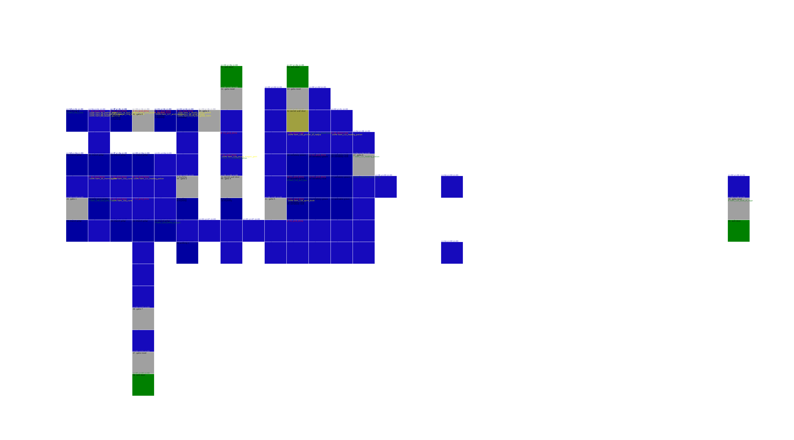
human_world_hidden_region
Item Memory used 7
Creatures score 210
9 exit-door Jail -> shadow_tower_part1c pos( -7 ,1 ,-7),unknown( 1 ,1),destMapIndex( 27),rot( 2),fineY( 0)
13 exit-door Corridor -> illusion_world_worship_domain pos( -4 ,0 ,-4),unknown( 0 ,8),destMapIndex( 13),rot( 1),fineY( 0)
26 exit-totem Totem -> human_world_forgotten_region pos( 6 ,-6 ,6),unknown( 5 ,0),destMapIndex( 0),rot( 0),fineY( 3)
0 item_12f_spirit_key
1 item_126_bottle_of_light
2 item_ce_soul_ring
3 item_126_bottle_of_light
4 item_130_blue_crystal
5 item_126_bottle_of_light
6 item_83_gauntlet
7 item_126_bottle_of_light
8 item_124_poison_vaccine
9 item_126_bottle_of_light
a item_126_bottle_of_light
b item_126_bottle_of_light
c item_120_divine_symbol
d item_126_bottle_of_light
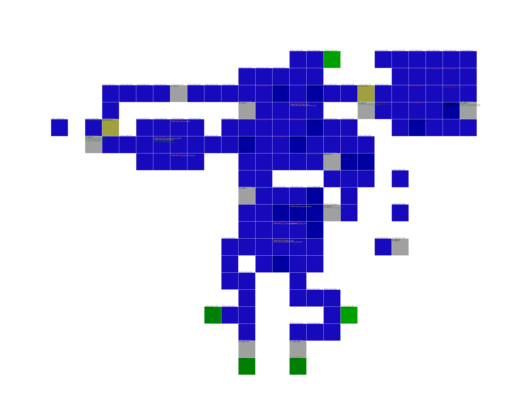
human_world_forgotten_region
Item Memory used 7
Creatures score 192
6 unknown id=111 6 5b80 38c380 unknown tile( 46, 40, 3d) 46 40 3d 0 6f 0 0 0 0 4 0 0 0 0 17 0 1c fc ff f0 ff ff 0 ff
18 exit-totem Totem -> human_world_hidden_region pos( 5 ,-5 ,5),unknown( -2 ,0),destMapIndex( 0),rot( 0),fineY( 3)
34 exit-door Exit -> human_world_solitary_region pos( 9 ,2 ,9),unknown( 0 ,0),destMapIndex( 4),rot( 0),fineY( 0)
37 exit-door Jump down -> shadow_tower_part3c pos( 5 ,3 ,5),unknown( 0 ,0),destMapIndex( 40),rot( 1),fineY( -8)
41 exit-totem Drop in -> death_world_dark_castle_layer pos( 25 ,-2 ,25),unknown( -5 ,0),destMapIndex( 0),rot( 3),fineY( 0)
0 item_125_dust_of_rage
1 item_126_bottle_of_light
2 item_127_acid_vaccine
3 item_126_bottle_of_light
4 item_11c_healing_potion
5 item_126_bottle_of_light
6 item_139_soul_pod_14_sp
7 item_126_bottle_of_light
8 item_11e_anti_venom
9 item_126_bottle_of_light
a item_11d_magic_potion
human_world_cursed_region
Item Memory used 2
Creatures score 137
21 0a_guardian_a 100% 0x50 score 251
30 04_fat_mole_a 100% 0x30 score NaN
3 exit-door Entrance -> shadow_tower_part3b pos( 0 ,3 ,0),unknown( 0 ,0),destMapIndex( 41),rot( 2),fineY( -8)
31 exit-door Guardian side -> water_world_sunken_river_area pos( 0 ,0 ,0),unknown( 0 ,0),destMapIndex( 21),rot( 3),fineY( 0)
0 item_10a_cune
1 item_126_bottle_of_light
2 item_126_bottle_of_light
3 item_126_bottle_of_light
4 item_10a_cune
5 item_126_bottle_of_light
6 item_126_bottle_of_light
7 item_126_bottle_of_light
Earth World
earth_world_rotting_cavern
Item Memory used 4
Creatures score 276
30 0a_blank 100% 0x20 score 35
13 exit-door Entrance -> death_world_undead_layer pos( -7 ,1 ,-7),unknown( 1 ,1),destMapIndex( 27),rot( 2),fineY( 0)
0 item_126_bottle_of_light
1 item_7a_leather_glove
2 item_126_bottle_of_light
3 item_126_bottle_of_light
4 item_126_bottle_of_light
5 item_9b_harden_leg_guard
6 item_126_bottle_of_light
7 item_138_soul_pod_29_sp
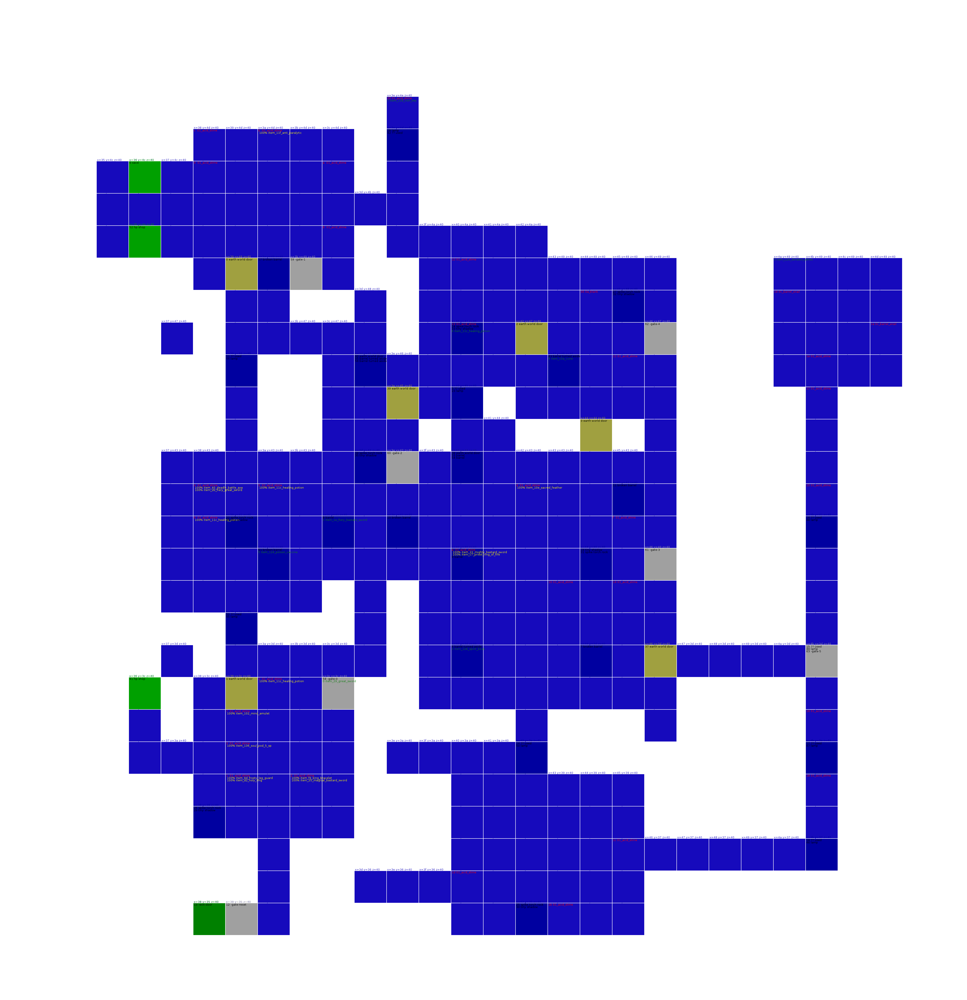
earth_world_poisonous_cavern
Item Memory used 7
Creatures score 285
20 00_duhrin 100% 0x10 score 286
30 05_blank 100% 0x20 score NaN
31 04_auriel_b 100% 0x70 score 421
32 0b_blank 100% 0x50 score NaN
33 0a_blank 100% 0x50 score 39
10 exit-door Rock guy -> earth_world_stone_cavern pos( -3 ,0 ,-3),unknown( 0 ,0),destMapIndex( 37),rot( 1),fineY( 0)
13 exit-door Poison -> water_world_white_rain_area pos( -3 ,0 ,-3),unknown( 0 ,0),destMapIndex( 37),rot( 2),fineY( 0)
17 exit-door Entrance -> death_world_dark_castle_layer pos( -7 ,0 ,-7),unknown( 1 ,1),destMapIndex( 11),rot( 2),fineY( 0)
0 item_126_bottle_of_light
1 item_2c_deadly_great_sword
2 item_126_bottle_of_light
3 item_12e_dorados_ashes
5 item_126_bottle_of_light
6 item_129_sealed_sword_stone
7 item_126_bottle_of_light
8 item_11f_anti_paralytic
a item_126_bottle_of_light
b item_10a_cune
1c item_126_bottle_of_light
1d item_db_caustic_ring
earth_world_stone_cavern
Item Memory used 5
Creatures score 237
13 0c_dybbuk 100% 0x25 score 236
30 00_dybbuk 100% 0x50 score 237
31 04_dybbuk 100% 0x0 score 237
32 04_dybbuk 100% 0x0 score 237
4 exit-door Entrance -> earth_world_poisonous_cavern pos( 9 ,1 ,9),unknown( 0 ,0),destMapIndex( 27),rot( 1),fineY( 0)
7 exit-door Exit -> illusion_world_bewilderment_domain pos( -4 ,5 ,-4),unknown( 0 ,0),destMapIndex( 41),rot( 1),fineY( -8)
0 item_8_silent_sword
1 item_126_bottle_of_light
2 item_12e_dorados_ashes
3 item_126_bottle_of_light
4 item_11d_magic_potion
5 item_126_bottle_of_light
6 item_11c_healing_potion
7 item_126_bottle_of_light

earth_world_quaking_cavern
Item Memory used 6
Creatures score 195
3 exit-door Entrance -> shadow_tower_part2a pos( 10 ,0 ,10),unknown( 6 ,0),destMapIndex( 15),rot( 1),fineY( 0)
0 item_66_plate_mail_of_resist
1 item_126_bottle_of_light
2 item_10a_cune
3 item_126_bottle_of_light
4 item_120_divine_symbol
5 item_126_bottle_of_light
6 item_11c_healing_potion
7 item_126_bottle_of_light
8 item_136_soul_pod_5_sp
9 item_126_bottle_of_light
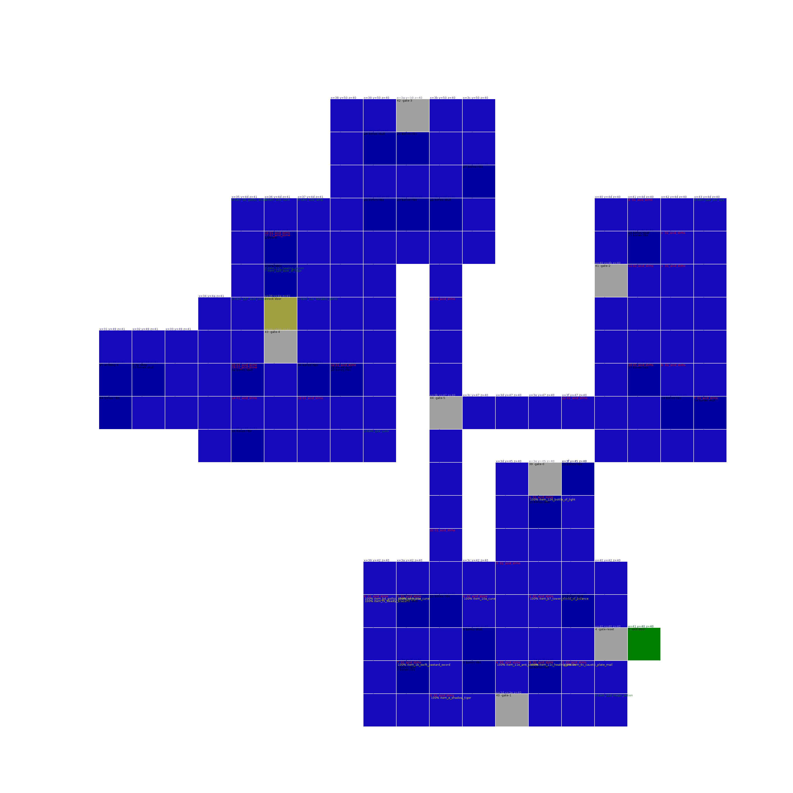
earth_world_false_pit_cavern
Item Memory used 7
Creatures score 628
b 08_guardian_b 100% 0x30 score 390
100% item_11e_anti_venom
c 08_guardian_b 100% 0x30 score 390
100% item_4d_helm
1 exit-door Bridge -> shadow_tower_part3a pos( 0 ,1 ,0),unknown( 0 ,0),destMapIndex( 41),rot( 2),fineY( -8)
3 exit-door Entrance -> death_world_undead_layer pos( 1 ,1 ,1),unknown( 0 ,0),destMapIndex( 26),rot( 3),fineY( -8)
5 unknown id=96 5 5b68 7f8b68 unknown tile( 44, 40, 38) 44 40 38 0 60 0 0 0 a8 fd 40 f1 0 f8 3d 0 64 fe 0 0 ff ff 0 ff
6 unknown id=96 6 5b80 7f8b80 unknown tile( 44, 40, 38) 44 40 38 0 60 0 0 0 58 2 40 f1 0 f8 3d 0 64 fe 0 0 ff ff 0 ff
7 unknown id=96 7 5b98 7f8b98 unknown tile( 44, 40, 38) 44 40 38 0 60 0 0 0 0 0 40 f1 58 fa 3d 0 60 fe 0 0 ff ff 0 ff
8 unknown id=96 8 5bb0 7f8bb0 unknown tile( 44, 40, 38) 44 40 38 0 60 0 0 0 0 0 40 f1 a8 f5 3e 0 5c fe 0 0 ff ff 0 ff
11 exit-door Exit -> shadow_tower_part2b pos( -5 ,3 ,-5),unknown( 0 ,0),destMapIndex( 40),rot( 2),fineY( -8)
16 exit-totem Totem -> illusion_world_gloomy_domain pos( 9 ,-2 ,9),unknown( 3 ,-8),destMapIndex( 0),rot( 2),fineY( 3)
19 exit-totem Jump in -> water_world_white_rain_area pos( 37 ,-3 ,37),unknown( 2 ,-8),destMapIndex( 0),rot( 0),fineY( 3)
0 item_126_bottle_of_light
1 item_11e_anti_venom
2 item_126_bottle_of_light
3 item_12e_dorados_ashes
4 item_126_bottle_of_light
5 item_5_long_sword
6 item_126_bottle_of_light
7 item_91_steel_boots
8 item_126_bottle_of_light
9 item_12e_dorados_ashes
a item_126_bottle_of_light
b item_120_divine_symbol
c item_126_bottle_of_light
d item_12e_dorados_ashes
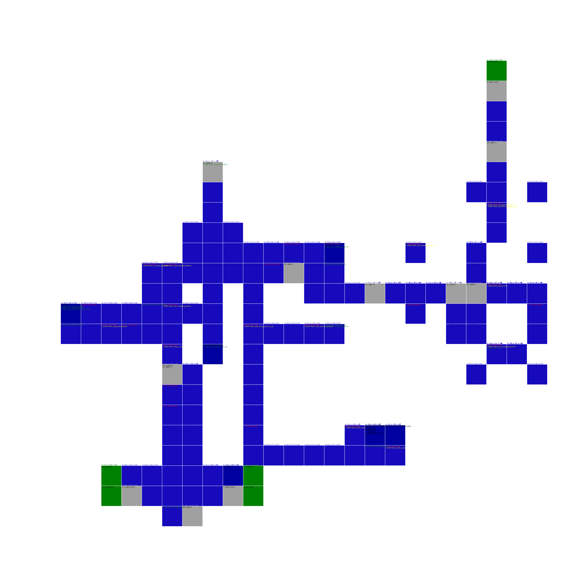
earth_world_hostile_rock_cavern
Item Memory used 4
Creatures score 275
21 04_dread_knight 100% 0x10 score 782
100% item_10a_cune
1 exit-door Entrance -> shadow_tower_part1b pos( 0 ,0 ,0),unknown( 0 ,0),destMapIndex( 21),rot( 0),fineY( 0)
3 exit-totem Boss room -> water_world_impure_pool_area pos( 10 ,6 ,10),unknown( 6 ,0),destMapIndex( 0),rot( 1),fineY( 2)
0 item_69_magical_plate_mail
1 item_126_bottle_of_light
2 item_10a_cune
3 item_126_bottle_of_light
4 item_11c_healing_potion
Fire World
fire_world_burning_cavern
Item Memory used 3
Creatures score 549
37 exit-door Entrance -> human_world_solitary_region pos( -4 ,0 ,-4),unknown( 0 ,8),destMapIndex( 13),rot( 1),fineY( 0)
93 exit-portal Room -> fire_world_molten_cavern pos( 13 ,15 ,13),unknown( -7 ,0),destMapIndex( 0),rot( 0),fineY( 0)
94 exit-portal Platform -> illusion_world_worship_domain pos( 13 ,15 ,13),unknown( -7 ,0),destMapIndex( 0),rot( 3),fineY( 0)
99 unknown id=252 99 6438 9b3c38 unknown tile( 35, 3f, 38) 35 3f 38 0 fc 0 0 0 0 0 0 4 0 0 8d 0 21 4 fd 0 0 12 2 0
0 item_12e_dorados_ashes
1 item_126_bottle_of_light
2 item_12e_dorados_ashes
3 item_126_bottle_of_light
4 item_11e_anti_venom
fire_world_molten_cavern
Item Memory used 4
Creatures score 16544
21 02_dead_abraxus 100% 0x10 score 249
30 00_abraxus 100% 0x10 score 16629
31 0c_fat_mole_c 100% 0x5 score 16410
32 08_fat_mole_b 100% 0x5 score 16410
19 exit-portal Platform -> fire_world_burning_cavern pos( 20 ,-6 ,20),unknown( -8 ,0),destMapIndex( 8),rot( 3),fineY( 0)
27 exit-portal Abraxus -> illusion_world_worship_domain pos( 13 ,0 ,13),unknown( -7 ,0),destMapIndex( 0),rot( 0),fineY( 0)
0 item_136_soul_pod_5_sp
1 item_126_bottle_of_light
2 item_120_divine_symbol
3 item_126_bottle_of_light
4 item_10d_lamp
5 item_126_bottle_of_light
6 item_136_soul_pod_5_sp
7 item_126_bottle_of_light
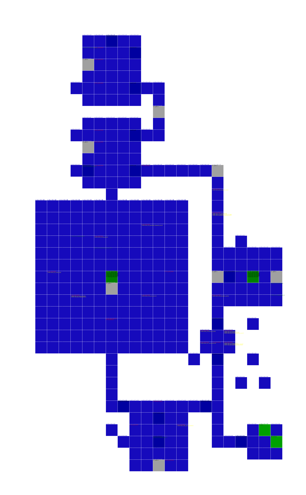
fire_world_phoenix_cave
Item Memory used 6
Creatures score 0
0 exit-door Entrance -> water_world_sunken_river_area pos( 10 ,0 ,10),unknown( 6 ,0),destMapIndex( 15),rot( 2),fineY( 0)
1 exit-door Exit -> illusion_world_gloomy_domain pos( 5 ,3 ,5),unknown( 0 ,0),destMapIndex( 0),rot( 0),fineY( -8)
0 item_126_bottle_of_light
1 item_136_soul_pod_5_sp
2 item_126_bottle_of_light
3 item_125_dust_of_rage
4 item_126_bottle_of_light
5 item_120_divine_symbol
6 item_126_bottle_of_light
7 item_120_divine_symbol
8 item_126_bottle_of_light
9 item_127_acid_vaccine
a item_126_bottle_of_light
b item_11e_anti_venom
c item_126_bottle_of_light
d item_120_divine_symbol
e item_126_bottle_of_light
fire_world_ashen_cavern
Item Memory used 4
Creatures score 6463
20 0c_ebony_knight 100% 0x100 score 3075
6 exit-portal Start -> illusion_world_dream_domain pos( 20 ,-6 ,20),unknown( -8 ,0),destMapIndex( 8),rot( 1),fineY( 0)
16 unknown id=169 16 5c70 92c470 unknown tile( 51, 40, 51) 51 40 51 0 a9 0 0 e 0 4 0 0 0 4 ba 0 14 fc ff ff 7 ff 0 0
17 exit-portal Cerberus -> illusion_world_worship_domain pos( 24 ,0 ,24),unknown( 2 ,0),destMapIndex(224),rot( 0),fineY( 2)
0 item_126_bottle_of_light
1 item_4e_helm
2 item_126_bottle_of_light
3 item_11d_magic_potion
4 item_126_bottle_of_light
6 item_124_poison_vaccine
7 item_126_bottle_of_light
Water World
water_world_impure_pool_area
Item Memory used 4
Creatures score 16349
30 00_fat_mole_f 100% 0x5 score 16432
31 04_blank 100% 0x5 score 191
0 unknown id=90 0 5af0 5352f0 unknown tile( 44, 40, 40) 44 40 40 0 5a 0 0 0 0 0 0 0 0 0 e3 0 40 fe 0 0 ff ff 0 ff
9 exit-door Entrance -> shadow_tower_part3a pos(-15 ,-2,-15),unknown( 1 ,1),destMapIndex( 14),rot( 0),fineY( 0)
11 exit-door Flush down -> shadow_tower_part3b pos( 4 ,3 ,4),unknown( 0 ,0),destMapIndex( 41),rot( 3),fineY( -8)
14 exit-totem Totem -> earth_world_hostile_rock_cavern pos( 37 ,-3 ,37),unknown( 2 ,-8),destMapIndex( 0),rot( 3),fineY( 3)
21 unknown id=105 21 5ce8 5354e8 unknown tile( 42, 40, 46) 42 40 46 0 69 0 0 0 0 0 0 0 0 0 d 1 40 fe 0 0 ff ff 0 ff
22 unknown id=106 22 5d00 535500 unknown tile( 42, 40, 45) 42 40 45 0 6a 0 0 0 0 0 0 0 0 0 e 1 40 fe 0 0 ff ff 0 ff
23 unknown id=107 23 5d18 535518 unknown tile( 41, 40, 46) 41 40 46 0 6b 0 0 0 0 0 0 0 0 0 9 1 40 fe 0 0 ff ff 0 ff
24 unknown id=108 24 5d30 535530 unknown tile( 41, 40, 45) 41 40 45 0 6c 0 0 0 0 0 0 0 0 0 a 1 40 fe 0 0 ff ff 0 ff
0 item_126_bottle_of_light
1 item_11c_healing_potion
2 item_126_bottle_of_light
3 item_127_acid_vaccine
4 item_126_bottle_of_light
5 item_10c_torch
water_world_sunken_river_area
Item Memory used 5
Creatures score 576
1 exit-door Entrance -> fire_world_phoenix_cave pos( -3 ,0 ,-3),unknown( 0 ,0),destMapIndex( 37),rot( 3),fineY( 0)
5 exit-door Pool -> human_world_cursed_region pos( 0 ,1 ,0),unknown( 0 ,0),destMapIndex( 41),rot( 0),fineY( -8)
0 item_126_bottle_of_light
1 item_102_mind_amulet
2 item_126_bottle_of_light
3 item_127_acid_vaccine
4 item_126_bottle_of_light
5 item_10c_torch
6 item_126_bottle_of_light
7 item_10c_torch
1c item_126_bottle_of_light
1d item_10a_cune
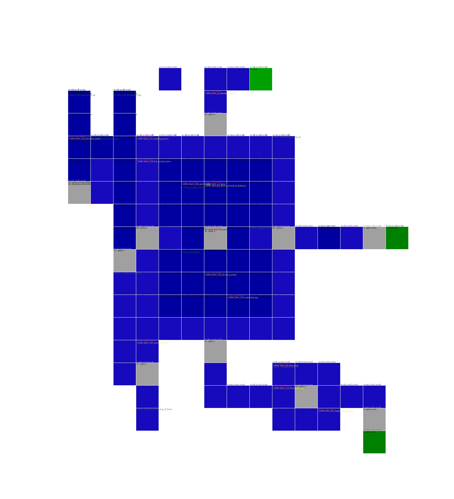
water_world_white_rain_area
Item Memory used 3
Creatures score 531
20 05_magi_magus 100% 0x10 score 1311
100% item_cf_soul_ring
100% item_df_ring_of_desire
4 exit-door Entrance -> earth_world_poisonous_cavern pos( 9 ,1 ,9),unknown( 0 ,0),destMapIndex( 27),rot( 3),fineY( 0)
6 exit-totem Totem -> earth_world_false_pit_cavern pos( 10 ,6 ,10),unknown( 6 ,0),destMapIndex( 0),rot( 1),fineY( 2)
0 item_126_bottle_of_light
1 item_11c_healing_potion
2 item_126_bottle_of_light
3 item_11c_healing_potion
4 item_126_bottle_of_light
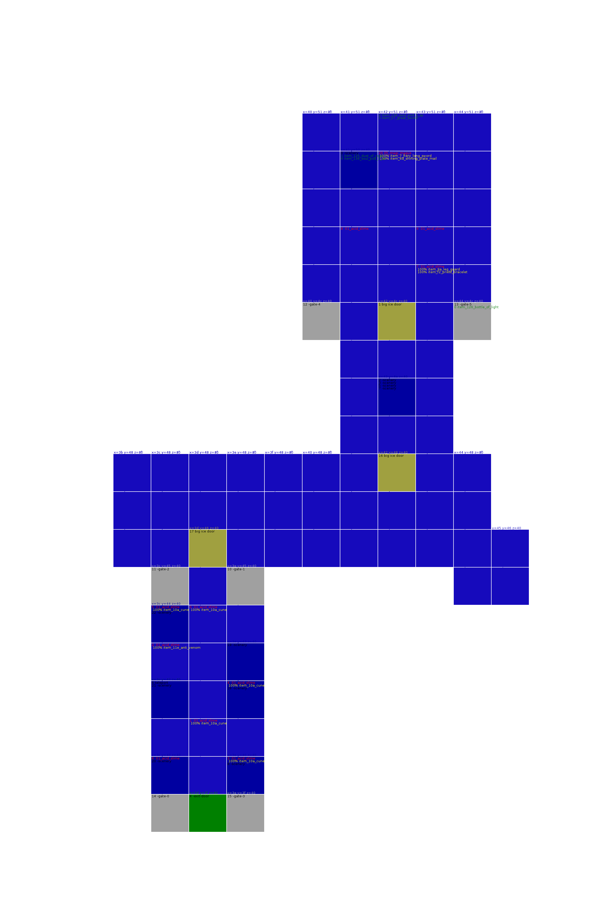
water_world_watery_labyrinth_area
Item Memory used 5
Creatures score 298
4 exit-door Entrance -> shadow_tower_part1c pos( -7 ,0 ,-7),unknown( 1 ,1),destMapIndex( 11),rot( 3),fineY( 0)
9 exit-door Exit -> shadow_tower_part1b pos( 9 ,2 ,9),unknown( 0 ,0),destMapIndex( 4),rot( 1),fineY( 0)
0 item_126_bottle_of_light
1 item_ad_great_shield_of_balance
2 item_126_bottle_of_light
3 item_126_bottle_of_light
4 item_126_bottle_of_light
5 item_10a_cune
6 item_126_bottle_of_light
7 item_11d_magic_potion
8 item_126_bottle_of_light
9 item_101_amulet_of_resist
a item_126_bottle_of_light

Monster World
monster_world_false_eye_area
Item Memory used 4
Creatures score 1055
30 02_lizard_servant 100% 0x10 score 233
31 06_lizard_servant 100% 0x10 score 233
9 exit-door Entrance -> death_world_dark_castle_layer pos( -2 ,2 ,-2),unknown( -8 ,0),destMapIndex( 9),rot( 2),fineY( 0)
10 exit-totem Totem -> monster_world_screeching_area pos( 37 ,-3 ,37),unknown( 2 ,-8),destMapIndex( 0),rot( 3),fineY( 3)
0 item_11e_anti_venom
1 item_126_bottle_of_light
2 item_124_poison_vaccine
3 item_126_bottle_of_light
4 item_11e_anti_venom
5 item_126_bottle_of_light
6 item_128_spirit_book
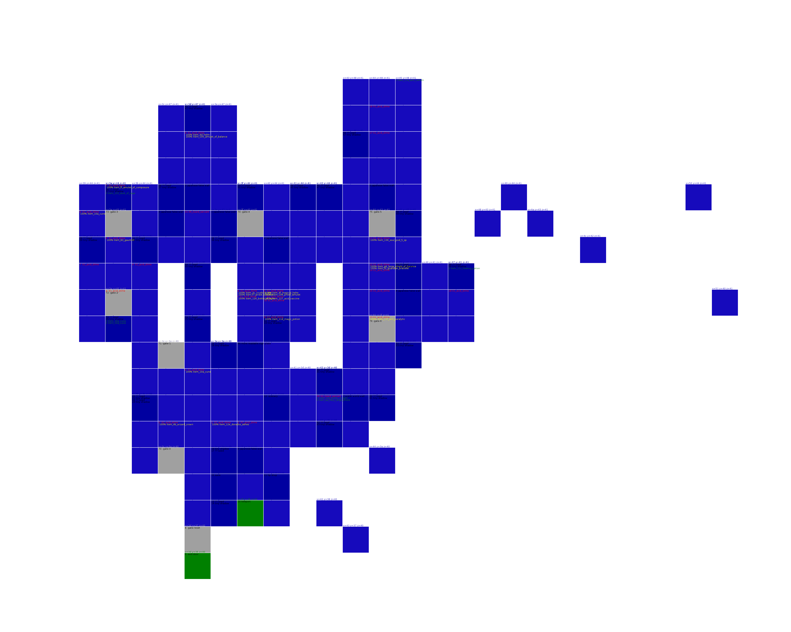
monster_world_screeching_area
Item Memory used 5
Creatures score 2061
21 0e_necron 100% 0x10 score 1592
100% item_100_amulet_of_curing
100% item_e4_ring_of_dead_spirit
30 01_auriel_c 100% 0x10 score 2530
0 exit-door Entrance -> death_world_gate_of_the_dead pos( -3 ,0 ,-3),unknown( 0 ,0),destMapIndex( 15),rot( 1),fineY( 0)
3 exit-totem Totem -> monster_world_false_eye_area pos( 2 ,-1 ,2),unknown( -7 ,0),destMapIndex( 8),rot( 1),fineY( 0)
6 exit-totem Necron -> illusion_world_dream_domain pos( 37 ,-3 ,37),unknown( 2 ,-8),destMapIndex( 0),rot( 1),fineY( 3)
0 item_126_bottle_of_light
1 item_ef_deadly_bracelet
2 item_126_bottle_of_light
1c item_98_steel_boots_of_resist
Illusion World
illusion_world_gloomy_domain
Item Memory used 3
Creatures score 979
30 0e_blank 100% 0x20 score 103
1 exit-door Entrance -> fire_world_phoenix_cave pos(-15 ,-2,-15),unknown( 1 ,1),destMapIndex( 14),rot( 2),fineY( 0)
3 exit-door Ladder down -> shadow_tower_part3b pos( -4 ,5 ,-4),unknown( 0 ,0),destMapIndex( 41),rot( 1),fineY( -8)
10 exit-totem Totem -> earth_world_false_pit_cavern pos( 15 ,-8 ,15),unknown(-10 ,0),destMapIndex( 0),rot( 2),fineY( 3)
2 item_126_bottle_of_light
3 item_136_soul_pod_5_sp
5 item_126_bottle_of_light
6 item_11f_anti_paralytic
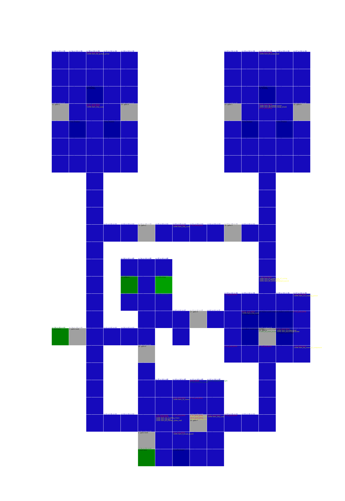
illusion_world_bewilderment_domain
Item Memory used 8
Creatures score 415
9 unknown id=78 9 5bc8 41b3c8 unknown tile( 49, 40, 4a) 49 40 4a 0 4e 0 0 4 0 fc 0 0 0 0 66 0 40 f9 66 0 af 0 1 ff
12 unknown id=76 12 5c10 41b410 unknown tile( 46, 40, 47) 46 40 47 0 4c 0 0 4 0 0 0 0 0 0 3c 0 19 f9 a9 0 3c 0 1 ff
18 exit-door Entrance -> earth_world_stone_cavern pos( 1 ,1 ,1),unknown( 0 ,0),destMapIndex( 26),rot( 0),fineY( -8)
20 exit-door Exit -> shadow_tower_part2a pos( -5 ,3 ,-5),unknown( 0 ,0),destMapIndex( 40),rot( 0),fineY( -8)
0 item_6e_dark_plate_mail
1 item_126_bottle_of_light
2 item_124_poison_vaccine
3 item_126_bottle_of_light
4 item_11c_healing_potion
5 item_126_bottle_of_light
6 item_12e_dorados_ashes
7 item_126_bottle_of_light
8 item_11f_anti_paralytic
9 item_126_bottle_of_light
a item_124_poison_vaccine
b item_126_bottle_of_light
c item_10a_cune
d item_126_bottle_of_light
e item_116_key_of_delusion
f item_126_bottle_of_light
10 item_116_key_of_delusion
11 item_126_bottle_of_light
illusion_world_worship_domain
Item Memory used 3
Creatures score 1133
21 04_wildowess 100% 0x5 score 1921
100% item_86_gauntlet_of_resist
22 01_gorthaur 100% 0x10 score 1026
23 08_fester 100% 0x5 score 1468
30 02_fat_mole_d 100% 0x80 score 16436
1 exit-door Entrance -> human_world_hidden_region pos( -8 ,0 ,-8),unknown( 1 ,1),destMapIndex( 15),rot( 3),fineY( 0)
6 exit-portal Connection -> fire_world_molten_cavern pos( 24 ,0 ,24),unknown( 2 ,0),destMapIndex(224),rot( 0),fineY( 2)
8 exit-portal To Boss -> fire_world_ashen_cavern pos( 13 ,15 ,13),unknown( -7 ,0),destMapIndex( 0),rot( 1),fineY( 0)
10 exit-portal Exit -> fire_world_burning_cavern pos( 20 ,-6 ,20),unknown( -8 ,0),destMapIndex( 8),rot( 0),fineY( 0)
0 item_126_bottle_of_light
1 item_11c_healing_potion
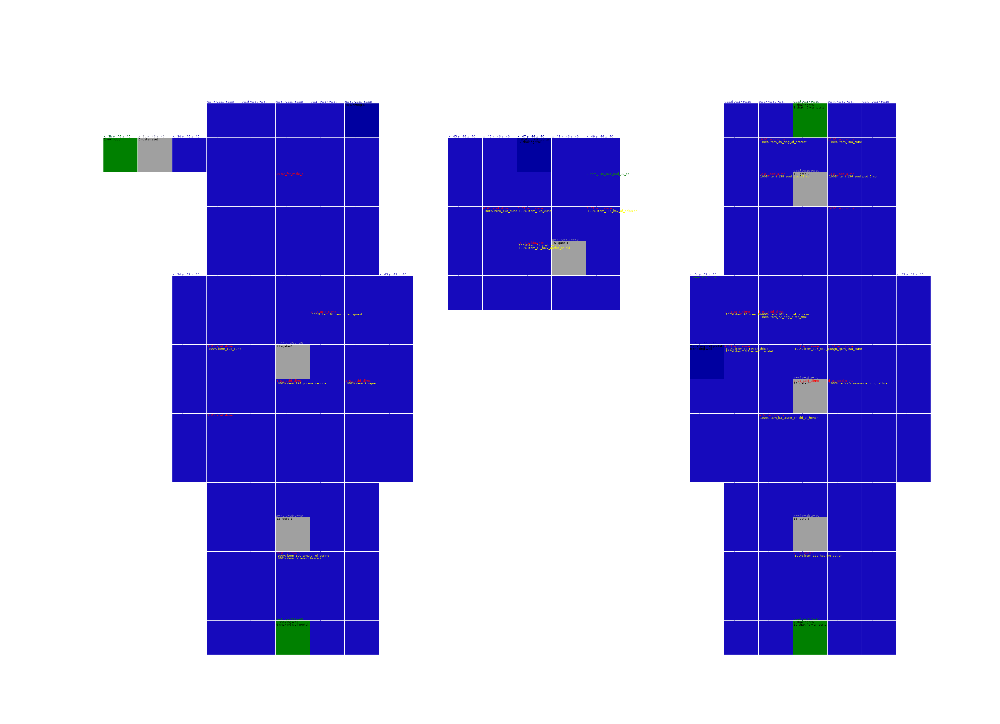
illusion_world_dream_domain
Item Memory used 4
Creatures score 570
20 01_disguise 100% 0x10 score 1096
100% item_11c_healing_potion
3 exit-portal Entrance -> fire_world_ashen_cavern pos( 13 ,0 ,13),unknown( -7 ,0),destMapIndex( 0),rot( 2),fineY( 0)
4 exit-totem Totem -> monster_world_screeching_area pos( 9 ,-2 ,9),unknown( 3 ,-8),destMapIndex( 0),rot( 3),fineY( 3)
0 item_b5_tower_shield_of_protect
1 item_126_bottle_of_light
2 item_10c_torch

Death World
death_world_dark_castle_layer
Item Memory used 6
Creatures score 1055
c 05_unknown_g 100% 0x30 score 1253
100% item_a8_harden_large_shield
d 05_unknown_g 100% 0x30 score 1253
e 05_unknown_g 100% 0x30 score 1253
100% item_11c_healing_potion
f 05_unknown_g 100% 0x30 score 1253
100% item_a5_shield_of_resist
20 08_armored_guardian 100% 0x30 score 1259
0 exit-door Prison -> earth_world_poisonous_cavern pos( -7 ,1 ,-7),unknown( 1 ,1),destMapIndex( 27),rot( 0),fineY( 0)
2 exit-door Entrance -> monster_world_false_eye_area pos( -3 ,0 ,-3),unknown( 0 ,0),destMapIndex( 2),rot( 3),fineY( 0)
4 exit-totem Lower totem -> human_world_forgotten_region pos( 9 ,-2 ,9),unknown( 3 ,-8),destMapIndex( 0),rot( 3),fineY( 3)
7 exit-totem Upper totem 1 -> death_world_lingering_curse_layer pos( 14,-14 ,14),unknown( -7 ,0),destMapIndex(252),rot( 1),fineY( 3)
10 exit-totem Upper totem 2 -> death_world_gate_of_the_dead pos( 23 ,20 ,23),unknown( 0 ,0),destMapIndex(248),rot( 1),fineY( 0)
0 item_126_bottle_of_light
1 item_124_poison_vaccine
2 item_126_bottle_of_light
3 item_128_spirit_book
4 item_126_bottle_of_light
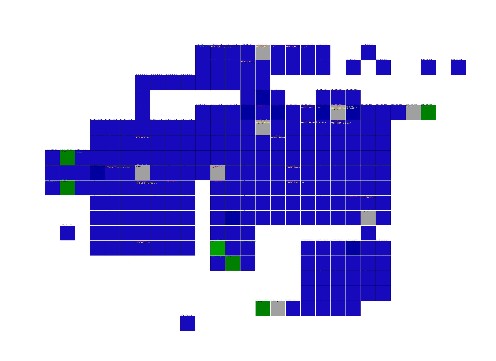
death_world_gate_of_the_dead
Item Memory used 2
Creatures score 2486
20 0c_hollow_mage 100% 0x5 score 2953
1 exit-door Entrance -> monster_world_screeching_area pos( 0 ,0 ,0),unknown( 0 ,0),destMapIndex( 1),rot( 2),fineY(-17)
4 exit-totem Totem -> death_world_dark_castle_layer pos( 25,-13 ,25),unknown( 0 ,0),destMapIndex( 0),rot( 3),fineY( 0)
0 item_126_bottle_of_light
1 item_125_dust_of_rage
2 item_126_bottle_of_light
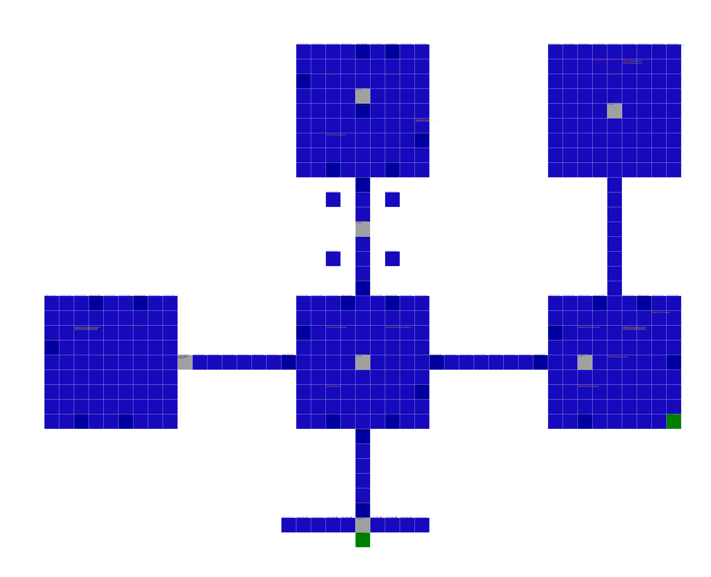
death_world_lingering_curse_layer
Item Memory used 2
Creatures score 1427
5 04_tree_ogre 100% 0x40 score 1386
6 04_tree_ogre 100% 0x40 score 1386
7 04_tree_ogre 100% 0x40 score 1386
30 00_unknown_e 100% 0x20 score 1434
31 04_blank 100% 0x20 score 192
1 exit-door Door -> shadow_tower_part2b pos( 5 ,3 ,5),unknown( 0 ,0),destMapIndex( 40),rot( 0),fineY( -8)
2 exit-totem Box room -> death_world_dark_castle_layer pos( 25,-13 ,25),unknown( 0 ,0),destMapIndex( 0),rot( 3),fineY( 2)
0 item_126_bottle_of_light
1 item_11c_healing_potion
2 item_126_bottle_of_light
3 item_126_bottle_of_light
death_world_undead_layer
Item Memory used 6
Creatures score 5774
21 04_king_edward 100% 0x20 score 2327
30 01_unknown_b 100% 0x20 score 2533
31 09_pulsating_heart 100% 0x10 score 1785
32 0d_fat_mole_e 100% 0x10 score 16450
12 exit-door King's room -> earth_world_false_pit_cavern pos( -3 ,0 ,-3),unknown( 0 ,0),destMapIndex( 15),rot( 1),fineY( 0)
15 exit-door Entrance -> earth_world_rotting_cavern pos( -7 ,0 ,-7),unknown( 1 ,1),destMapIndex( 11),rot( 1),fineY( 0)
0 item_12d_pitcher_of_nadya_mp
1 item_126_bottle_of_light
2 item_e9_bracelet_of_movement
3 item_126_bottle_of_light
4 item_136_soul_pod_5_sp
5 item_126_bottle_of_light
6 item_5e_leather_armor
7 item_126_bottle_of_light
8 item_139_soul_pod_14_sp
9 item_126_bottle_of_light
a item_11c_healing_potion
1c item_126_bottle_of_light
1d item_11c_healing_potion
Shadow Tower
shadow_tower_part1
Item Memory used 0
Creatures score 0
0 exit-door Tower Top -> shadow_tower_part2b pos( 4 ,5 ,4),unknown( 0 ,0),destMapIndex( 40),rot( 1),fineY( -8)
4 exit-door Edge -> earth_world_hostile_rock_cavern pos( 0 ,1 ,0),unknown( 0 ,0),destMapIndex( 41),rot( 1),fineY( -8)
5 exit-door Top -> human_world_solitary_region pos( 4 ,5 ,4),unknown( 0 ,0),destMapIndex( 40),rot( 2),fineY( -8)
8 exit-door Middle -> water_world_watery_labyrinth_area pos( 9 ,1 ,9),unknown( 0 ,0),destMapIndex( 27),rot( 1),fineY( 0)
9 exit-door Edge -> water_world_watery_labyrinth_area pos( -9 ,0 ,-9),unknown( 0 ,0),destMapIndex( 32),rot( 1),fineY( 0)
11 exit-door Middle -> human_world_hidden_region pos( 4 ,1 ,4),unknown( 0 ,0),destMapIndex( 41),rot( 1),fineY( -8)

shadow_tower_part2
Item Memory used 0
Creatures score 0
0 exit-door Top left -> illusion_world_bewilderment_domain pos( -8 ,0 ,-8),unknown( 1 ,1),destMapIndex( 15),rot( 0),fineY( 0)
4 exit-door Top right -> earth_world_quaking_cavern pos( -3 ,0 ,-3),unknown( 0 ,0),destMapIndex( 37),rot( 3),fineY( 0)
5 exit-door Edge -> death_world_lingering_curse_layer pos(-15 ,-2,-15),unknown( 1 ,1),destMapIndex( 14),rot( 0),fineY( 0)
7 exit-door Middle -> earth_world_false_pit_cavern pos( -8 ,0 ,-8),unknown( 1 ,1),destMapIndex( 15),rot( 2),fineY( 0)
9 unknown id=252 9 5bc8 111a3c8 unknown tile( 45, 45, 40) 45 45 40 0 fc 0 0 0 0 0 0 fc 0 0 cf 1 4 0 f4 1 1 a 1 0
11 exit-door Upper -> shadow_tower_part1a pos( 5 ,3 ,5),unknown( 0 ,0),destMapIndex( 0),rot( 3),fineY( -8)

shadow_tower_part3
Item Memory used 0
Creatures score 0
0 exit-door Top right -> human_world_solitary_region pos( 4 ,0 ,4),unknown( 0 ,0),destMapIndex( 4),rot( 3),fineY( 0)
3 exit-door Top left -> earth_world_false_pit_cavern pos( 10 ,0 ,10),unknown( 6 ,0),destMapIndex( 15),rot( 2),fineY( 0)
5 exit-door Bottom middle -> water_world_impure_pool_area pos( 4 ,0 ,4),unknown( 0 ,0),destMapIndex( 4),rot( 3),fineY( 0)
7 exit-door Top edge -> human_world_cursed_region pos( 0 ,0 ,0),unknown( 0 ,0),destMapIndex( 1),rot( 2),fineY(-17)
9 exit-door Bottom -> water_world_impure_pool_area pos( 5 ,3 ,5),unknown( 0 ,0),destMapIndex( 0),rot( 1),fineY( -8)
10 exit-door Fence -> human_world_forgotten_region pos( 4 ,5 ,4),unknown( 0 ,0),destMapIndex( 40),rot( 2),fineY( -8)
13 exit-door Bottom end -> illusion_world_gloomy_domain pos( -2 ,2 ,-2),unknown( -8 ,0),destMapIndex( 9),rot( 3),fineY( 0)

Void
void